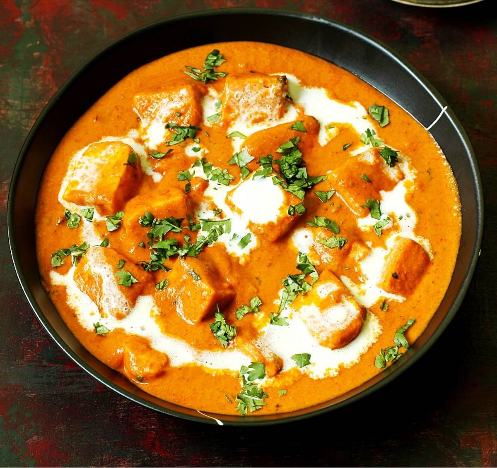

Paneer Butter Masala
Veg · Creamy, rich North Indian curry
Your photo goes here
(save it as images/paneer-butter-masala.jpg)
(save it as images/paneer-butter-masala.jpg)

Ingredients checklist
0 of 0 ingredients ready
You have everything. Time to cook!
Instructions
- Heat 1 tbsp butter and the oil in a pan. Add the onion and cook until soft and golden.
- Add the tomatoes and soaked cashews. Cook for 8 to 10 minutes until the tomatoes are mushy.
- Let the mixture cool slightly, then blend it into a smooth puree.
- In the same pan, melt the remaining butter. Add the ginger-garlic paste and cook for 1 minute.
- Pour in the puree. Add the chilli powder, coriander powder and salt. Simmer for 5 to 7 minutes.
- Stir in the paneer cubes, sugar and a splash of water if the gravy is too thick. Simmer for 5 minutes.
- Crush the kasuri methi between your palms and add it with the garam masala and cream.
- Cook for 1 more minute, then serve hot with naan, roti or rice.